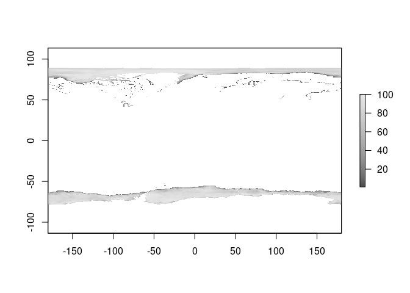
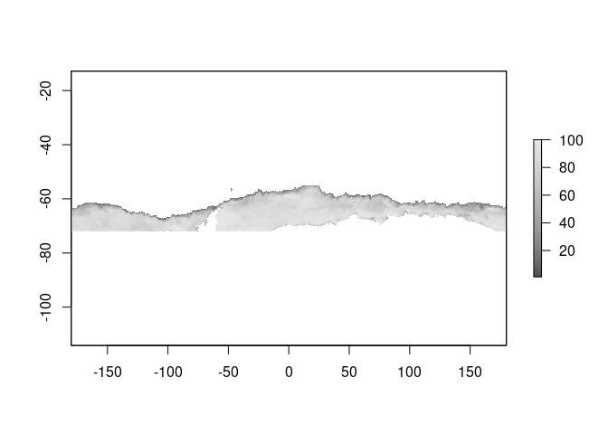
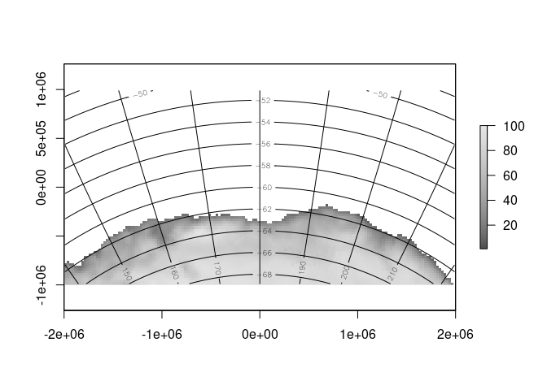
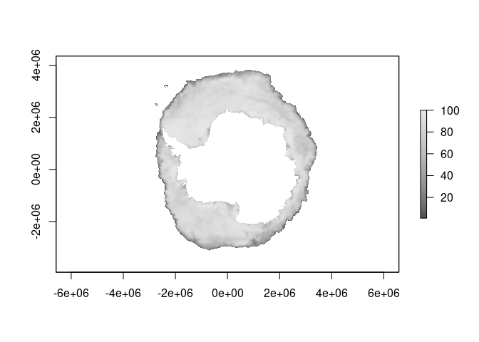

The goal of seaice is to read sea ice concentration data directly from the internet. This package contains functions to find the right file URL for a given date, for either northern or southern hemisphere data.
NOTE: you don’t need to use the functions in this package, see the example below which obtains a wrapper function read_seaice(). This package must exist to provide the tools for that to work, but for various reasons I don’t want the read function to be in this package.
Work in progress
If you aren’t comfortable installing the development version of vapour (instructions are given by the example function), the please don’t actually try to run the example. You can explore the sources and temporary files created by the functions in this package, they are
nsidc_north_filesnsidc_north_ftpnsidc_north_vrtnsidc_north_vrt_textnsidc_south_filesnsidc_south_ftpnsidc_south_vrtnsidc_south_vrt_text
The *files() functions return a data frame of dates and URLs. The *_ftp() functions return the actual URL for a given date (a binary file). The *_vrt() functions return the path to a temporary VRT file that wraps the source URL for a given date with a GDAL VRT virtual raster. The *_vrt_text() functions return the contents of the VRT file for a given date.
The read_seaice() function defined below relies on dev-vapour package and wraps up the above to drive GDAL to return the data for a given data on your raster grid of choice.
This package contains a file list (where the file is on the internet, and the date it applies to) for a data file, and will construct a raster format that can be used to read the data directly. This happens via GDAL, using its virtual raster format “VRT”. A temporary file is created to store the information about the file at the URL, and then GDAL does the rest, downloading the file and reading from it into whatever grid/projection we specify.
With this we can
- read any date since 1978-10-26 (currently we are a bit limited to the latest but see todo)
- specify a raster grid, of any resolution, any projection, and any extent any where on the planet (the polar regions are really the only relevant ones, but we can use the entire earth or part of it)
- read both hemispheres in one call
If you prefer stars or terra or raster or some other package, throw the VRT file path at their raster read functions. 👍
TODO
- currently only NSIDC, add more providers
- keep files up to date, started with 2021-05-23
- be smarter about filling in missing days
- write helpers for commonly used grids (e.g. 0.25 degree longlat, Mercator, or local equal area, etc)
- write helpers for terra, stars, base image(), netcdf output, whatever
- speed it up, currently a bit slow (25s for each file, but subsequent read of each day is fast because the file seems to be cached by GDAL or the OS)
These files are binary and read over FTP, so the entire file is downloaded somewhere by GDAL (they are small). Other sources use GeoTIFF or NetCDF and we are exploring including those as well.
Let us know what you think! See the Issues tab to discuss, or post information about any problems you encounter.
Installation
You can install the development version from GitHub with:
# install.packages("remotes")
remotes::install_github("AustralianAntarcticDivision/seaice")Example
This is a basic example which shows you how to read sea ice data for any date since 1978-10-26. The data is projected onto a raster grid, with a global default provided. You can use the xylim argument to specify a specific raster in any projection.
Go with the default.
library(seaice)
source(system.file("examples/read_seaice.R", package = "seaice", mustWork = TRUE))
library(raster) # we could use terra or stars or whatever, see todo
#> Loading required package: sp
icecol <- grey.colors(100)
zl <- c(1, 100)
ice0 <- read_seaice("2020-10-15")
plot(ice0, col = icecol, zlim = zl)
Usually we will want something more specific, like only the southern hemisphere. To do that, define the right raster grid and set the xylim argument with it.
The source data for this function is 25km pixels, in a polar grid. We choose 0.2 in degrees as the resolution (about a fifth of 100km which is about the distance in a degree along a great circle).
r <- raster(extent(-180, 180, -76, -55), res = 0.2, crs = "+proj=longlat")
(ice <- read_seaice("2020-10-15", xylim = r))
#> class : RasterLayer
#> dimensions : 105, 1800, 189000 (nrow, ncol, ncell)
#> resolution : 0.2, 0.2 (x, y)
#> extent : -180, 180, -76, -55 (xmin, xmax, ymin, ymax)
#> crs : +proj=longlat +datum=WGS84 +no_defs
#> source : memory
#> names : layer
#> values : 1.2, 100 (min, max)
plot(ice, col = icecol, zlim = zl)
Or we can pick our own projection/grid that we want.
rg <- raster(extent(-2e6, 2e6, -1e6, 1e6), res = 25000, crs = "+proj=laea +lat_0=-60 +lon_0=180")
pice <- read_seaice("2020-10-15", xylim = rg)
plot(pice, col = icecol, zlim = zl, asp = 1)
## hack a graticule
ll <- rgdal::project(coordinates(rg), projection(rg), inv = TRUE)
ll[ll[,1] < 0, 1] <- ll[ll[,1] < 0, 1] + 360
contour(setValues(rg, ll[,1]), add = TRUE)
contour(setValues(rg, ll[,2]), add = TRUE)
To get exactly the grid used by this source data, use a bit of a trick.
tfile <- nsidc_south_vrt() ## date does not matter, we just want the native grid specification so get the VRT
## this is the grid, used by NSIDC, here in the abstract (no data in it)
g <- raster(raster(tfile))
native <- read_seaice("2020-10-15", xylim = g)
plot(native, col = icecol, zlim = zl)
This grid is an old one, defined as ‘EPSG:3412’. The north is ‘EPSG:3411’ and that can be obtained the same, just replace ‘south’ with ‘north’ in the code above.
print(native)
#> class : RasterLayer
#> dimensions : 332, 316, 104912 (nrow, ncol, ncell)
#> resolution : 25000, 25000 (x, y)
#> extent : -3950000, 3950000, -3950000, 4350000 (xmin, xmax, ymin, ymax)
#> crs : +proj=stere +lat_0=-90 +lat_ts=-70 +lon_0=0 +x_0=0 +y_0=0 +datum=WGS84 +units=m +no_defs
#> source : memory
#> names : layer
#> values : 1.2, 100 (min, max)Get involved
Let us know what you think! See the Issues tab to discuss, or post information about any problems you encounter.
Code of Conduct
Please note that the seaice project is released with a Contributor Code of Conduct. By contributing to this project, you agree to abide by its terms.